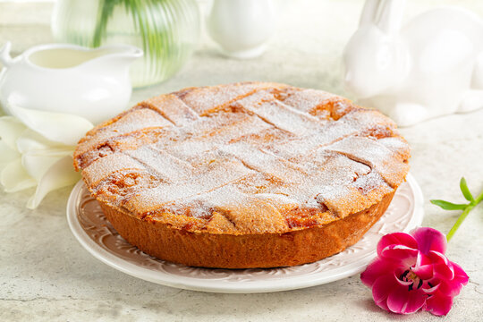

Pastiera Recipe

Description
Pastiera is a type of Italian cake made with ricotta cheese and candied fruit. It is usually eaten at Easter.
Ingredients
- 500g ricotta cheese
- 200g sugar
- 100g candied fruit
- 4 eggs
- 1 lemon
- 1 orange
- 1 teaspoon of vanilla extract
- 1 tablespoon of orange blossom water
- 1 tablespoon of butter
- 1 tablespoon of flour
- 1 tablespoon of milk
- 1 packet of puff pastry
Steps
- Preheat the oven to 180°C.
- Grease a cake tin with butter and dust with flour.
- Roll out the puff pastry and line the cake tin with it.
- Beat the eggs with the sugar until light and fluffy.
- Add the ricotta cheese, candied fruit, vanilla extract, orange blossom water, and the zest of the lemon and orange.
- Pour the mixture into the cake tin.
- Roll out the remaining puff pastry and cut into strips.
- Arrange the strips in a lattice pattern on top of the cake.
- Brush the top of the cake with milk.
- Bake in the oven for 45 minutes or until golden brown.
Back to home